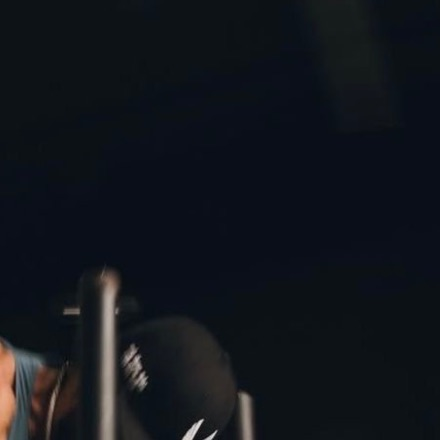

● LOUPE — R01 / 12ARoll 01 — the floor takes weight36 exp · pushed +1
Roll 02 — motion & neon36 exp · drag the shutter
Roll 03 — cold & afterwards24 exp · kept in the fridge
Notes on method Document the club as it is: no reshoots, no posing, no lighting that the room doesn't already own. Grain stays. Sweat stays.
Notes on people Members appear as themselves. Beginners appear as regulars, about six weeks later. The camera waits; everybody develops.
Notes on joining Subscriptions open at the front desk — first week free, every wing included, parking solved. Bring shoes; the rest is culture.